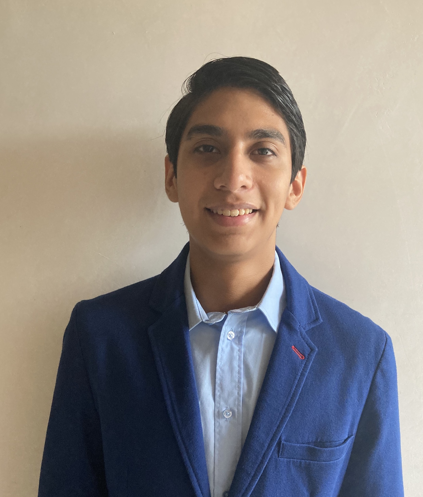

About me
¡Hi! I am a second semester medical student at ITESM, and I have a profound interest in everything related to the human brain; I also love to work with people of all types, make research, teach, and, above else, learn.
Contact
Education
2020 - Present
GPA: 9.78Instituto Tecnológico de Estudios Superiores de Monterrey
Medicine2017 - 2020
GPA: 9.98High School Colegio Antonio Repiso
2014 - 2017
GPA: 9.50Escuela Secundaria Técnica No.1 "Álvaro Obregón"
ElectronicsSkills
Web Development
Graphic Design and Video Editing
Languages
Soft Skills
Musical Instruments
Personal Projects
Neuroengineering Research Group
Member of the Neuroengineering Research Group at ITESM, developing a neuroacoustics
project for children with autism spectrum disorder
(Present)
Academic Society Representative
Representative of Véritas, academic society at ITESM, during the present
scholar cycle
(Present)
U-LEAD Diploma
Selected to participate in the U-LEAD Diploma, a diploma given to high performance,
leading students
(Present)
ChemPound
Development of a Web Application, in which two selected chemical elements can be
combined to know the name of the generated compound
(Present)
EMIS Talks
Selected as one of the eight lecturers in the first edition of EMIS Talks, at ITESM,
with my lecture ¿Qué causa la enfermedad de Alzheimer? (What causes Alzheimer's
Disease?)
(November 2020)
Abstract Coauthor
Member of the team of authors of the abstract Solving a
Challenging Diagnosis: Intracranial Atherosclerosis vs Moyamoya Disease
(October 2020)